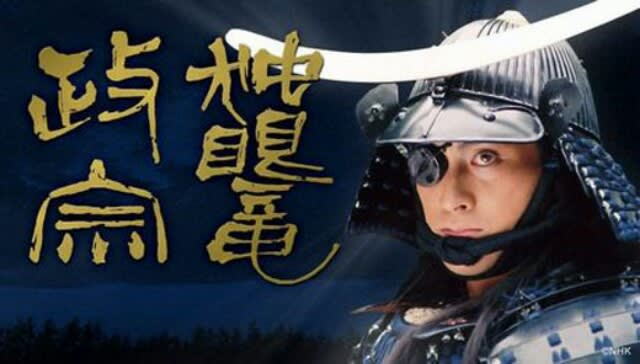
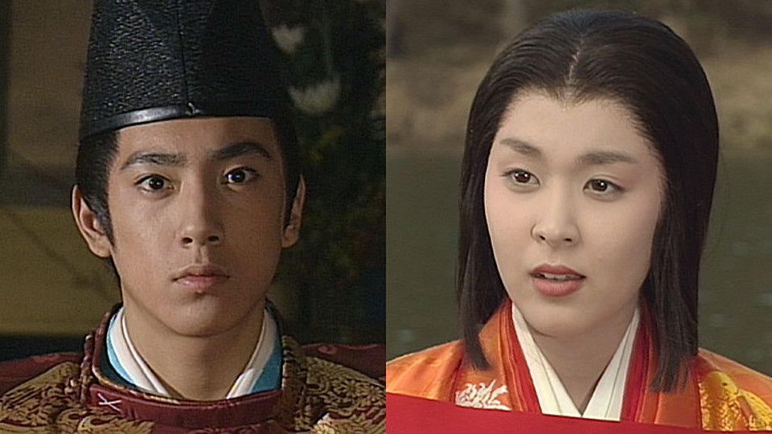
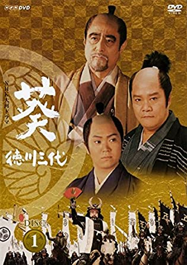
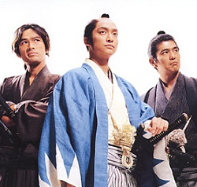
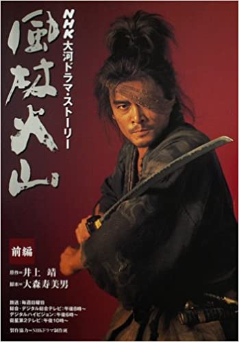
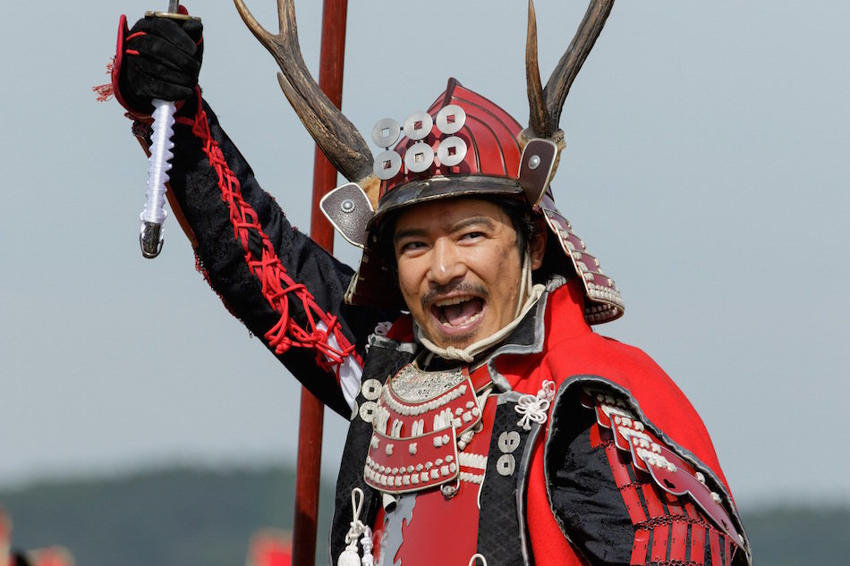

MY HOME PAGE
独眼竜政宗

1987年（昭和62年）1月4日から12月13日まで放送された大河ドラマ。アンケート調査では、最も好きな大河ドラマに輝いた。大河ドラマ絶頂期の代表作の一つで、主演は渡辺謙さん。
己の知恵と才覚によって仙台藩62万石の礎を一代で築いた奥州の戦国武将・伊達政宗の生涯を描かれた。
太平記

1991年1月6日から12月8日まで放送した大河ドラマ。個人的には一番好きな大河。主演は真田広之さん。
あまり題材になりにくい南北朝の話をメインに添えた大河で、主人公の足利尊氏の一生を描いた。
花の乱

1994年4月3日から12月11日にかけて放送された大河ドラマ。主演は三田佳子さん。
太平記と同じく足利幕府を軸にしており、こちらは応仁の乱を描いた。主人公は足利義政の妻・日野富子。略奪戦がえげつない。あと鬱大河。
葵 徳川三代

2000年1月9日から12月17日に放送された大河ドラマ。20世紀最後のNHK大河ドラマ。主演は故・津川雅彦さん、西田敏行さん、尾上辰之助さん。
豊臣秀吉の死後、江戸幕府を樹立した徳川家康、秀忠、家光の3人の物語。主人公がリレー指揮になるのは1993年後半に放送された炎立つ以来。大御所俳優さんが多い。あと音楽も素敵。合戦シーンは圧巻。
新選組！

2004年1月11日から12月12日まで放送された大河ドラマ。主演はSMAPの香取慎吾さん。
タイトルの通り、新選組がメインであり、その局長を務める近藤勇を主人公に話が進んでいく。本編では近藤勇の死以降が描かれなかったため、2006年正月に土方歳三を主役とした続編が作られるなど、異色の大河。
風林火山

2007年1月7日から12月16日まで放送された大河ドラマ。主演は内野聖陽さん。
クランクイン当初は全49回（2007年12月9日終了）での放送予定だったが、番組の人気と、クライマックスである第四次川中島の戦いのロケで迫力シーンが多く撮れたことを理由に急遽1話分を増やし、全50回放送へと変更されるという、大河ドラマでは初の予定より増えた作品。
真田丸

2016年1月10日から12月18日まで放送された大河ドラマ第55作。主演は堺雅人さん。
過去五年で最高視聴率を誇り、近年の大河の中でもかなりの人気作。作品の中身もギャグなどを織り交ぜつつも、しっかりとした作風に仕上がっている。何気に次作にしれっとエールを送ってたりする。
戻る